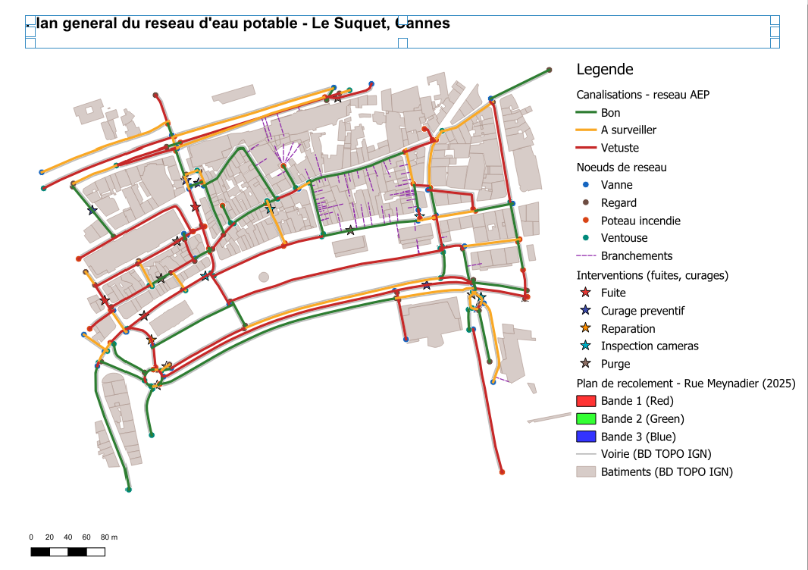

SIG patrimonial · Réseaux d'eau potable · QGIS/PostGIS · Projet personnel, 2025
Réseau d'eau potable du Suquet
Une démonstration de gestion SIG patrimoniale : saisie, diagnostic et suivi des interventions
Contexte et objectif
La gestion patrimoniale d'un réseau d'eau potable repose sur un travail de fond souvent invisible : saisir chaque nouveau tronçon et chaque branchement dans le SIG, tenir à jour l'état des canalisations, et consigner chaque intervention terrain (fuite, curage, réparation). Ce projet reconstitue ce travail de technicien SIG réseaux sur un secteur réel du Suquet à Cannes : la base de données et ses attributs (état, matériau, coûts d'intervention) sont simulés à des fins de démonstration, mais leur structure et leur volumétrie reproduisent celles d'une base patrimoniale réelle.
Données et structuration SIG
Le projet QGIS s'appuie sur le bâti et la voirie réels du secteur (BD TOPO IGN, 410 bâtiments et 133 tronçons de voirie) comme fond de plan, sur lequel a été construite une base réseau en 5 couches, réunies dans un même GeoPackage : 133 tronçons de canalisation (matériau, diamètre, date de pose, état, longueur), 152 nœuds de réseau (vannes, regards, poteaux incendie, ventouses), 60 branchements caractérisés, et 22 interventions de gestion. L'ensemble est structuré en Lambert-93 (EPSG:2154), et chaque couche métier est symbolisée par classification thématique sur son attribut clé (état, type de nœud, type d'intervention).
Contrôle qualité
Avant toute analyse, la base a été passée au crible de plusieurs contrôles automatisés : complétude des attributs critiques, absence de doublons géométriques, et cohérence référentielle entre les 60 branchements et 22 interventions et leurs tronçons de canalisation associés — aucune anomalie détectée sur ces trois points. Un contrôle topologique complémentaire (rattachement des 266 extrémités de tronçon aux 152 nœuds du réseau, tolérance 0,5 m) a en revanche révélé 54 extrémités non raccordées à moins de 3 m d'un nœud, correspondant pour partie à des limites du secteur d'étude et pour partie à des écarts de saisie à corriger.
Diagnostic patrimonial
Sur les 6,43 km de réseau saisis, la classification par état distingue 56 tronçons vétustes (42 %), 34 à surveiller (26 %) et 43 en bon état (32 %) — une répartition qui permettrait, sur un réseau réel, de prioriser les travaux de renouvellement par secteur. Les canalisations se répartissent entre quatre matériaux (fonte, PVC, acier, PEHD), reflet des différentes générations de pose.
Suivi des interventions
Les 22 interventions enregistrées (9 purges, 5 curages préventifs, 5 inspections caméra, 2 fuites, 1 réparation) représentent un coût cumulé de 23 127 €, chacune rattachée à son tronçon de canalisation.

Résultats et portée
L'ensemble aboutit à un plan général thématique du réseau, mis en page avec légende complète, échelle et repère nord. Ce projet m'a permis de structurer une base de données patrimoniale complète et de manipuler les tâches concrètes d'un poste de technicien SIG réseaux d'eau : saisie, contrôle qualité, diagnostic et restitution cartographique.